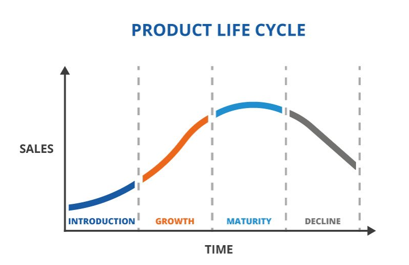

The length of time a product is introduced to consume into the market until it is removed from the consumer.
It is widely used by business professionals as a factor in deciding when it is appropriate to increase advertising, reducing prices, expand to, new market, or redisign packing.
Stages unvolved in product life cycle are:
INTRODUCTION
GROWTH
MATURITY
DECLINE

It is widely used by business professionals as a factor in deciding when it is appropriate to increase advertising, reducing prices, expand to, new market, or redisign packing.
Stage 1. INTRODUCTION
Sales is increasing slowly
This stage tends to be slow as demand needs to be created
Time to move through
Stage 2. GROWTH
Sales starts increasing rapidly
Competitors may enter the market with their own version of the new product.
Branding becomes important to maintain the companies position.
Product pricing and availability also become critical factors to continue driving sale.s
Stage 3. MATURITY
Sales growth tends to slow down.
The product is well-established and the cost of producing and marketing the existing product will decline.
Branding, price and product differentiation becomes even more important.
Stage 3.DECLINE
Sales tend to reduce
Other companies seeking to emulate your success with additional product feature or lower price.
Can also be caused by inovation that supersede the existing product.
Many companies will begin to move on to different ventures because is no longer lucrative.